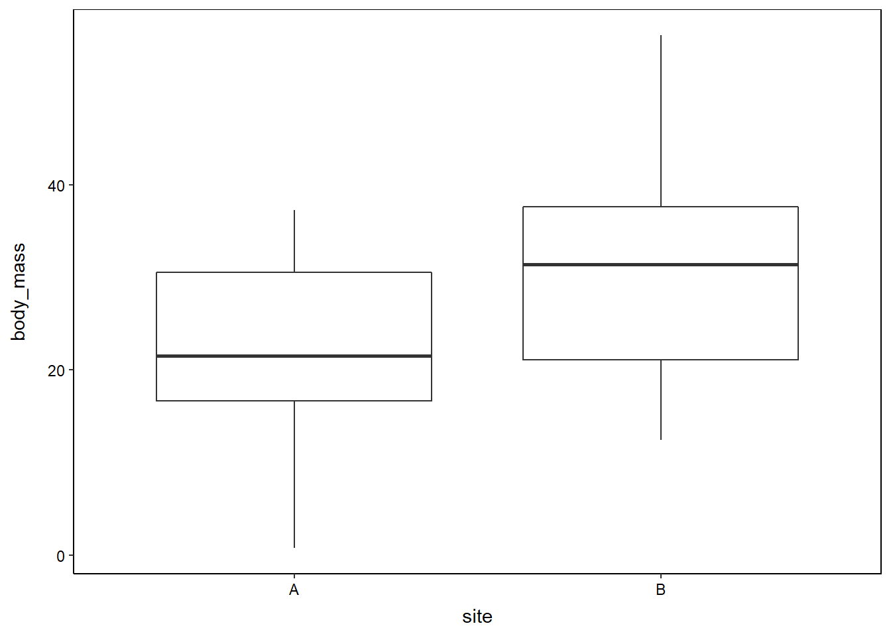
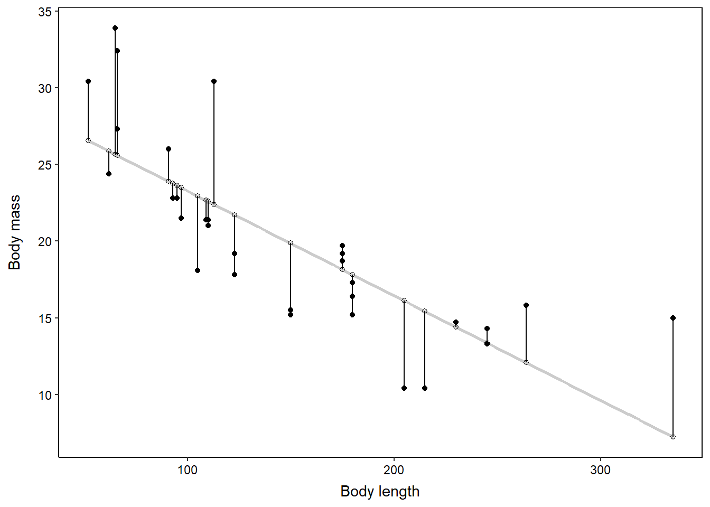
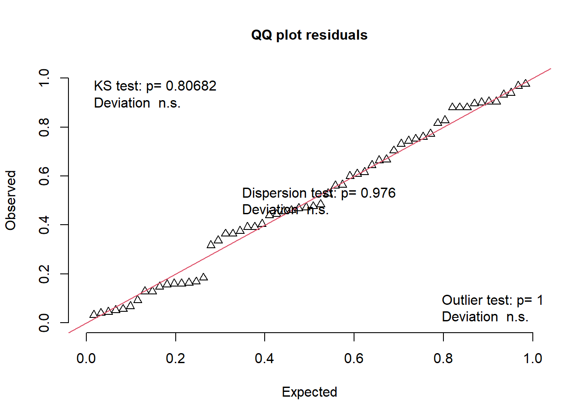
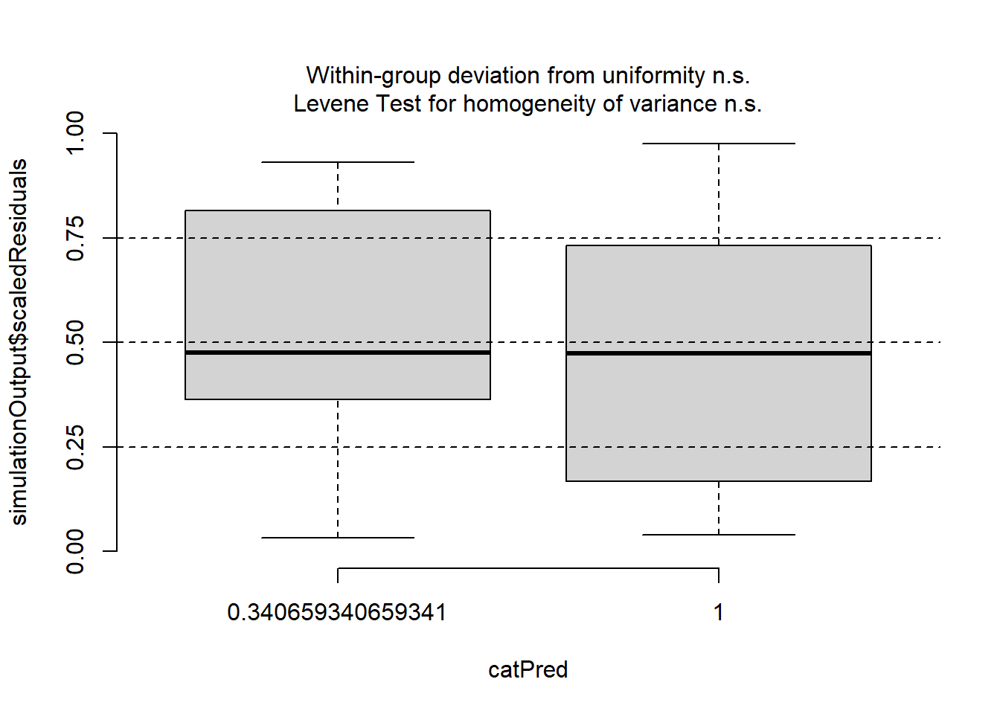
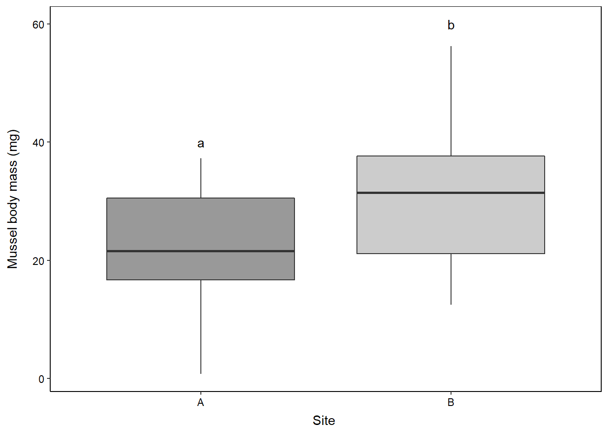

Background
Many scared ecologists worry about which statistical test to use to analyse their hard-earned data. This is natural. Typically, some form of linear model will be used to analyse the data, whereby the relationship between a continuous response variable (y) is modelled with respect to one or more explanatory variables (x1, x2, …). A general linear model (GLM) is an umbrella term for a linear model for data (residuals) that follow a normal or Gaussian distribution (more on this later). Basically, the GLM encompasses those pesky analyses you were likely taught during undergraduate statistics courses.
- A GLM where our x is numeric is analogous to a `linear regression`
- A GLM where our x is categorical is analogous to a `analysis of variance (ANOVA)`
Today, we are going to work through a simple example of a Gaussian General Linear Model (GLM) with a single categorical x variable (i.e. `ANOVA`) using R.
The data
Let’s consider a study where we measure the body mass of 30 mussels (body_mass) from two field sites (site). Here, we have a single categorical predictor variable (site).
# Simulate data to correlate X and Y amongst groups
set.seed(2021)
data1 <- data.frame(y = rnorm(n = 30, mean = 20, sd = 10),
x = rep(LETTERS[1], each = 30))
data2 <- data.frame(y = rnorm(n = 30, mean = 35, sd = 10),
x = rep(LETTERS[2], each = 30))
data <- dplyr::bind_rows(data1, data2) %>%
dplyr::rename(body_mass = y,
site = x)Study questions
We want to evaluate whether the mass of the mussels we collected differs between the two field sites.
H0: Mussel body mass is not statistically different between the two sites.
H1: Mussel body mass is statistically different between the two sites.
Exploratory data analysis
The first step in our statistical analysis should familiarising ourselves with the data. To do this, you should be performing exploratory data analysis (EDA).
(i) Check the data corresponds to the experimental design
The first thing I usually do is check that the number of replicates per treatment is in line with the experimental design. In other words, we sampled 30 mussels per site, so let’s just check that each site has 30 mussel body mass measurements.
# Start with the data frame
data %>%
# Calculate the number of replicates per 'site'
dplyr::count(site) site n
1 A 30
2 B 30As expected, there are 30 rows of data per site. Good start!
(ii) Visualise the data
The next step is to plot your data. You should be noting aspects such as:
- Is there a visual difference in means or the distributions of values in the different groups?
- Is there more variation in one group vs another group?
# Start with the data frame
data %>%
ggplot(data = ., aes(x = site,
y = body_mass)) +
geom_boxplot()
In this case, it looks like the median body mass (indicated by the bold black line) of mussels collected at site A is lower than than at site B). The variance (i.e. spread of body mass values along the y-axis) appears to be relatively similar between the two sites.
Fitting the model
Fitting a GLM is relatively simple in `R`. All we need to do is tell it what is our response variable (the response variable is the measurement we are interested in). Here, the response variable is body_mass. We then specify our predictor variables to the right-hand side of this weird ~ (tilde) symbol. Our predictor variables are things we have recorded that we believe could be affecting the response variable. Here, our predictor variable was site. We need to tell R where these data are stored (data), and that we want a gaussian GLM (`family = gaussian()`).
# Fit Gaussian model
mod1 <- glm(
# Response variable
body_mass ~
# Fixed effect
site,
data = data,
family = gaussian(link = "identity")
)Evaluating model fit
Before we look at the results from our model, we must first check whether the GLM that we fit was an appropriate choice for our data. We do that by looking at model diagnostics. Model diagnostics rely heavily on calculating and visualising residuals. For example, let’s assume we had fit a model looking at whether body length is a predictor of body mass below. The residuals are the filled black circles, indicating the deviation between our observed data value and its expected value under the given model (indicating by the unfilled circle). Simply, residuals are the observed data value minus its expected value from a model. GLM’s make assumptions about the distribution of the residuals which we are going to unpack below.

In my opinion, the easiest and most informative way perform model diagnostics check in R is using the amazing package DHARMa). Below, we are going to plot two different graphs to evaluate whether our choice of model was okay.
Before we make any plots, we have to get DHARMa to produce residuals for us to use in our plots. We will feed these residuals into the different plotting functions.
simulated_resids <- DHARMa::simulateResiduals(
fittedModel = mod1,
plot = F
)(i) Plot #1: QQPlot
The QQ plot tells us whether our data conforms to the distribution we specified in the `family` argument in the GLM call above (remember: we said `family = gaussian`). If our GLM is a good fit to the data, the white triangles will fall approximately on the red 1:1 line and the KS test P-value will be greater than 0.05. The Kolmorogorov-Smirnoff test (KS test) is a formal statistical test to evaluate whether our data follow the distribution we specified in the `family` argument in the GLM call above.
DHARMa::plotQQunif(simulated_resids)
Here, we can see two important things. Firstly, the white triangles fall approximately along the red 1:1 line, indicating that our residuals (the white triangles) approximate the data distribution we specified in `family = …`. Secondly, the Kolmorogorov-Smirnoff test (KS test) provides further support that the residuals from our model were not significantly different from the the data distribution we specified in `family = …`. Taken together, the QQplot shows us that our residuals are approximately normally distributed. Great!
(ii) Plot #2: Residuals vs Predicted Plot
This plots allows us to evaluate whether our data demonstrates heteroscedasticity. This is just a fancy way to say that the variance in the data is systematically dependent on some variable in the model. If you remember back to undergraduate statistics courses, linear models typically assume that the data displays equal variances across groups or numeric variables. When our predictor variables are categorical, such as in the current model (remember `site` was our predictor variable with two levels, `siteA` and `siteB`), this plot will show boxplots with each level (e.g. each site) getting its own boxplot.
If our GLM was a good fit, we would like the boxplots to be centered between y = 0.25 to y = 0.75, with the bold black line falling approximately on the y = 0.5 line. DHARMa has recently introduced a nice function which automatically produces a formal statistical test for within-group uniformity and between-group homogeneity of variances. Ultimately, we want both of these tests to return `n.s.` meaning a non-significant result.
DHARMa::plotResiduals(simulated_resids)
The plot shows us that there aren’t major concerns over unequal variances. While we would like to see the left-hand boxplox grey-shaded area range from y = 0.25 to 0.75 (it ranges from y = 0.33 to 0.80), both the test for uniformity and unequal variances test were `n.s.`. In later posts, we will unpack model diagnostics in much greater detail. Stay tuned.
Statistical inference
Now to the bit of the analysis that most ecologists are most interested in (at least to appease their reviewers: assessing statistical significance and calculating p-values). Here, we perform statistical inference, which basically means we are going to evaluate “which [model] coefficients are non-zero beyond a reasonable doubt, implying meaningful associations between covariates and the response?”
To do this, we will use a Likelihood Ratio Test (LRT). When we only have 1 predictor variable (here: site), we can calculate p-values using type I sum-of-squares (SOS). SOS’s are just different ways that we ask R to calculate p-values.
**PLEASE DO NOT USE SUMMARY() - THIS WILL PRODUCE THE WRONG P-VALUES WHEN YOU HAVE MORE THAN 1 PREDICTOR VARIABLE**
# Perform LRT with type I sum-of-squares
car::Anova(
mod1,
test = "LR"
)Analysis of Deviance Table (Type II tests)
Response: body_mass
LR Chisq Df Pr(>Chisq)
site 12.442 1 0.0004198 ***
---
Signif. codes: 0 '***' 0.001 '**' 0.01 '*' 0.05 '.' 0.1 ' ' 1So, the LRT tells us that mussel `body_mass` was statistically significantly different between sites (𝚾 = 12.44, d.f. = 1, P < 0.001).
Make a figure
Now we are going to make a figure to summarise our findings and that you can include in your thesis or paper.
# Make plot
data %>%
ggplot(data = ., aes(x = site,
y = body_mass,
fill = site)) +
geom_boxplot() +
# Fill the boxes by site
scale_fill_grey(start = 0.6) +
# Add significance letters
scale_x_discrete("Site ",
labels = c("A", "B")) +
annotate("text", x = 1, y = 40, label = "a") +
annotate("text", x = 2, y = 60, label = "b") +
# Change axis labels
labs(y = "Mussel body mass (mg)")
Reuse
Citation
@online{f.sutton2021,
author = {Guy. F. Sutton},
title = {General {Linear} {Model} {(GLM):} {Gaussian} {GLM}},
date = {08/04/2021},
langid = {en}
}